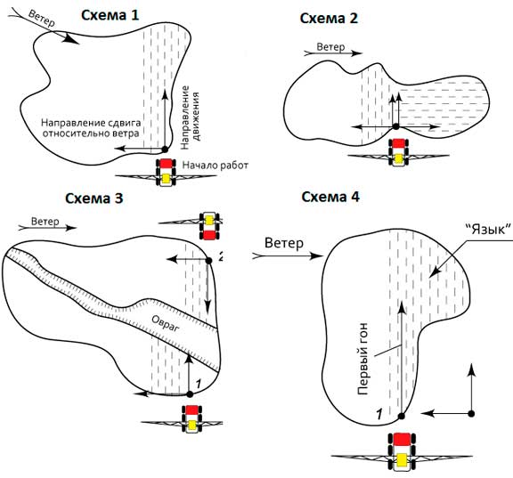

использование gps-навигатора для эффективной работы опрыскивателя

24 февраля 2019
Использование GPS-навигаторов в сельскохозяйственных работах уже стало привычным делом. Но как может этот прибор помочь наиболее эффективно и быстро обработать нужную территорию, особенно если работы проводятся в ночное время? Основываясь на опыте эксплуатации опрыскивателей полевых, мы предлагаем ознакомиться с несколькими наиболее оптимальными схемами работы.
Выбор точки начала работ
В первую очередь, перед началом работ по опрыскиванию, нужно определить очертания поля, направление ветра и рядков. От этих трех параметров зависит то, откуда следует начинать работу. На рисунках представлены 4 примерных схемы проведения работ
Если сложилось так, что работы по опрыскиванию планируется проводить ночью, рекомендуем заранее днём объехать поле по периметру для того, чтобы в навигаторе остались очертания площади. Объезд можно совместить с обработкой границ. Во всех предложенных вариантах опрыскивания (схемы 1–4) сначала нужно проводить краевую обработку. Когда поле разделяется каким-либо препятствием, например, оврагом как на схеме 3, краевую обработку нужно проводить для обоих участков.
Проведение работ по GPS
Когда правильно выбрана точка начала работ и произведена краевая обработка, делаем первый гон. Как правило, на противоположном конце поля находятся ориентиры, если их нет — едем, ориентируясь на грядки. До тех пор пока пневмоход не достигнет края поля, на навигаторе ничего не отобразится и только после разворота станет видна линия краевой обработки.
Далее можно действовать двумя способами:
- Совмещать краевую линию с наружным краем маркера на экране навигатора. Этот способ требует навыка и быстроты действий, так как все операции проделываются в движении.
- Приблизившись к границе поля, переключиться на первую передачу и развернуть пневмоход (вправо или влево в зависимости от выбранного направления работ). Таким образом, машина сама выезжает на следующий гон, который отображается на экране навигатора по ширине маркера.
Заправка в поле
Если площадь обрабатываемой территории 200–500 Га, необходима заправка опрыскивателя. Лучше осуществлять заправку в разных точках поля. Такой подход имеет два преимущества: во-первых, пневмоход не будет сминать посевы, останавливаясь на одной и том же месте. Во-вторых, каждый раз возвращаясь в одну точку, вы потеряете много времени. Оптимальным вариантом является наличие легкового автомобиля, который осуществляет доставку заправочного комплекса в нужное место. При этом не стоит опасаться того, что легковой автомобиль застрянет в поле в непогоду — пневмоход запросто вытащит машину из любой колеи.
назад к статьямКонтакты
- Адрес
443548, Самарская область, Волжский район, п.г.т. Смышляевка, ул.Механиков, 16
- Тел/Факс+7 (846) 202-23-32
- e-mail:info@pnevmohod.su